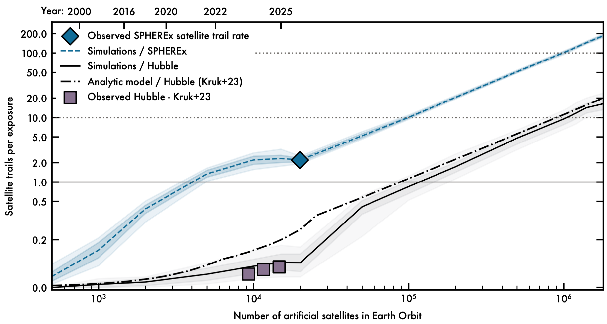
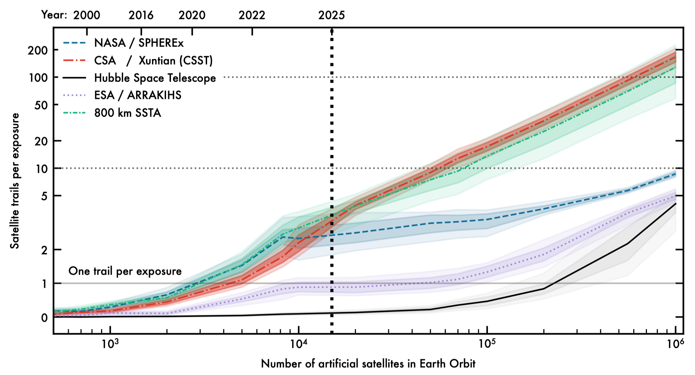
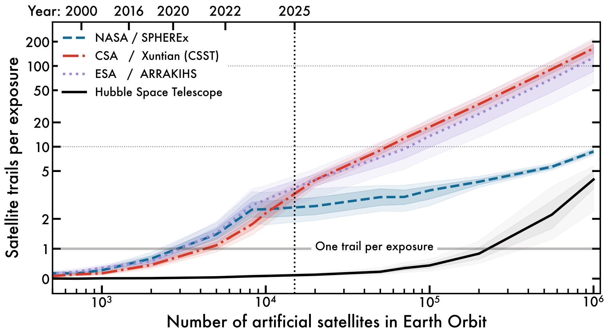
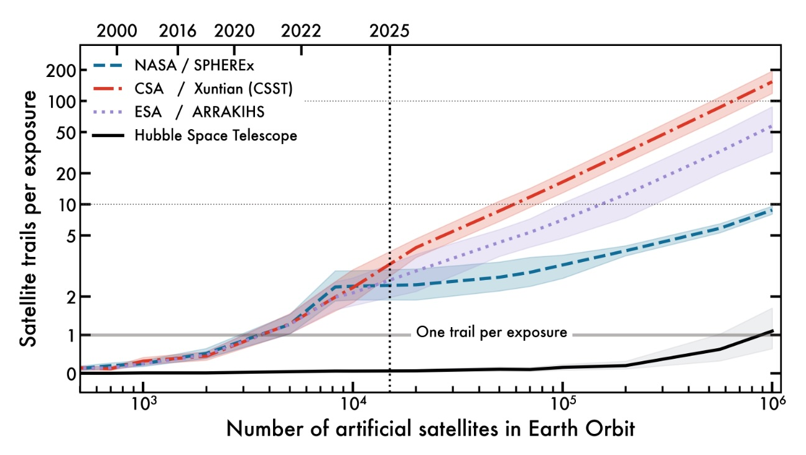

Simulations
The forecast is updated as we receive new data from both the satellite constellations and the space telescopes. The plot below illustrates how increasing numbers of satellites in low-Earth orbit correlate with higher trail frequencies observed by space telescopes.
Latest Satellite Trail Forecast (v3, April 2026)
Published in SPHEREx confirms predictions for artificial satellite trail pollution in Low Earth Orbit (Borlaff et al. 2026). Currently in revision for publication in The Astronomical Journal.
{kind=link}

Figure 1: Average number of satellite trails per exposure observed in SPHEREx observations compared against the predicted trail rate from Borlaff, Marcum, Howell 2025, as a function of the population of artificial satellites in Earth orbit (lower x-axis) and epoch (upper x-axis). Blue diamond: Observed average number of satellite trails in SPHEREx images. The different lines represent simulated models for the following observatories. Blue: SPHEREx. Black: Hubble Space Telescope. Contours represent the 95% confidence levels for the mean number of trails. Dashed-dotted line: Predicted number of satellite trails based on Kruk et al. 2023. Grey squares: Observer trails in Hubble from 2002-2021. Horizontal solid line: One trail per exposure critical contamination level.
This model implements several updates: - New satellite constellations: We have implemented the latest FCC/ITU announcements (March 2026) from CTC1 and CTC2 (96,714 satellites each), and the SpaceX Orbital Data Centers (SXODC, 1,000,000 satellites). The total number of satellites considered (included existing debris, dead, and active satellites, and proposed constellations) adds up to 1,843,084. Planet4589: Satellite Constellation list.
Satellite debris with available cross-sectional area estimations (Planet4589 Satellite filtering list) are now included in the models. We select the main bus diameter times span of longest appendage as the maximum cross-sectional area of the satellite in face-on orientation (AREA 2). Catalogued objects (Space-track) with a) sizes smaller than \(<1 \rm{mm}^{2}\), b) not orbiting Earth, and c) flagged as DOWN (de-orbited), are removed from the simulation.
Satellites with known dimensions (i.e., SpaceX Starlink Gen 1, 2, and xAI orbital data centers) have now a fixed area in the simulations. Those satellites for which their dimensions are unknown retain the original size distribution assumed in the original paper (1 – 125 m2).
Previous models
Note: These models are outdated and no longer represent an accurate forecast. We keep them here for archival and reference purposes. In particular, models before January 2026 do not account for the impact of SpaceX Orbital Data Centers (ODC, 1,000,000 satellites) and the latest FCC/ITU announcements from CTC1 and CTC2 (100,000 satellites each). see Planet4589: Satellite Constellations.
Nature publication (v2, January 2026)
In the version of the article initially published, in the “Space telescope orbit and attitude simulation” section of the Methods, the article assumed that the minimum Earth limb angle for ARRAKIHS was 7.6°, the same value as that of Hubble Space Telescope, while the angle adopted by the mission proposal is 55.7°. As a consequence, the satellite trail frequency per exposure, percentage of affected exposures, and area affected per image in the original version for ARRAKIHS thus would correspond to a Sun-synchronous terminator aligned telescope with an orbit altitude of 800 km, a 1.4 degree2 field of view, and a minimum limb angle of 7.6° (now designated, “800 km SSTA”, see corrected Figure 1). Adopting a 55.7° minimum Earth limb angle, the results for ARRAKIHS (as proposed to ESA in January 2026) are:
In the Abstract, Satellite trail frequency, and Discussion sections, the average number of satellite trails for ARRAKIHS would be \(3.22_{-0.27}^{+0.27}\) per typical exposure instead of \(69_{-21}^{+21}\) with 560,000 satellites in orbit.
In the Satellite trail frequency section, the average number of satellite trails for ARRAKIHS would be \({4.97}_{-0.44}^{+0.45}\) per typical exposure instead of \(127_{-41}^{+43}\) with 1,000,000 satellites in orbit, and the fraction of the field of view (FOV) covered by trails would be \(0.914_{-0.080}^{+0.083}\) %, instead of \(22.3_{-7.2}^{+7.4}\) %.
In the Satellite trail frequency section, \(92\pm 10%\) of the ARRAKIHS exposures would be affected by satellite trails, instead of \(96.2 \pm 7.2%\) if the proposed 560,000 satellites are deployed.
We thank the ARRAKIHS team for their careful review of the original manuscript, which improved the manuscript significantly. All the authors have been consulted and agree with the details of this correction.
Published in SPHEREx confirms predictions for artificial satellite trail pollution in Low Earth Orbit (Borlaff et al. 2026). Currently in revision for publication in The Astronomical Journal.
{kind=link}

Figure 1:The average number of satellite trails visible in each exposure is shown in relation to both the number of artificial satellites orbiting Earth (lower x axis) and epoch (upper x axis). Blue, SPHEREx; red, Xuntian; purple, ARRAKIHS; black, Hubble Space Telescope. Contours represent the 95% confidence levels for the mean number of trails. Horizontal solid line indicates one trail per exposure critical contamination level; vertical dotted line marks the current number of active and inactive satellites in orbit (15,000 as of March 2025).
Nature publication (v1, December 2025)
{kind=link}

Figure 1: The average number of satellite trails visible in each exposure is shown in relation to both the number of artificial satellites orbiting Earth (lower x axis) and epoch (upper x axis). Blue, SPHEREx; red, Xuntian; purple, ARRAKIHS; black, Hubble Space Telescope. Contours represent the 95% confidence levels for the mean number of trails. Horizontal solid line indicates one trail per exposure critical contamination level; vertical dotted line marks the current number of active and inactive satellites in orbit (15,000 as of March 2025).
Nature pre-print (v0, April 2025)
Published as a pre-print in Research Square upon submission to Nature. Preprints are preliminary reports that have not undergone peer review. The results shown here were based on the methods and satellite population data available at the time of submission (March 2025) and may not reflect the latest developments in satellite constellations or space telescope capabilities.
{kind=link}

Figure 1: Mean number of satellite trails per exposure as a function of the population of artificial satellites in Earth orbit (lower x−axis) and epoch (upper x−axis). Blue: SPHEREx, Red: Xuntian, Purple: ARRAKIHS. Black: Hubble Space Telescope. Contours represent the 95% confidence levels for the mean number of trails. Horizontal solid line: One trail per exposure critical contamination level. Vertical dotted line: Current number of active and inactive satellites in orbit (15,000 as of March 2025).
Future releases (v4, 2026)
We are currently working on an updated version of the forecast that will include several more observatories. Some of the unpublished models in the v3 release are already processed and in review by the relevant mission teams. We will include one new observatory in the v4 updated forecast. We expect to release this in late 2026. If you found a bug, want a new telescope, or would like to collaborate with us on this effort, please send us an email.